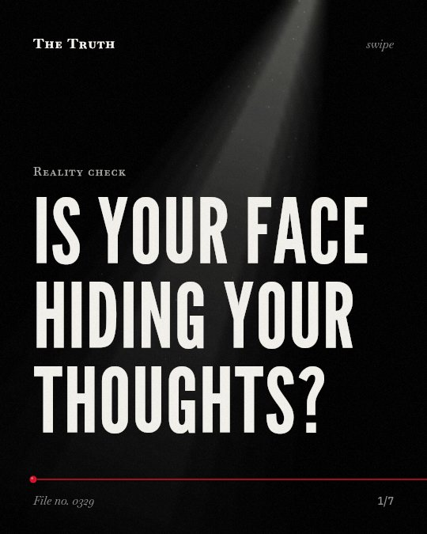

Reality check
Is your face hiding your thoughts?

The evidence does not support this claim.
Current research on emotion recognition and facial motor circuits provides no data on whether surveillance causes you to subconsciously alter your expressions. The evidence is mixed and inconclusive.
Supported. At least one solid peer-reviewed study. The evidence goes against the popular idea.
What the research found
Facial palsy is linked to reduced sensorimotor-face-network functional connectivity in Moebius.
“Exploratory electroencephalography (EEG) revealed reduced sensorimotor-face-network functional connectivity in Moebius, consistent with altered cross-route integration.”
Observational study, 2026. Sessa et al., Proceedings of the National Academy of Sciences of the United States of America.
The SAFE-Drive system achieves 80.25% average accuracy and 79.91% macro-averaged F1-score under the few-shot adapted LOSO protocol for driver emotion recognition.
“SAFE-Drive achieves 80. 25% average accuracy and 79. 91% macro-averaged F1-score under the few-shot adapted LOSO protocol, supporting the effectiveness of multimodal fusion and limited target-subject calibration for driver emotion recognition in real-driving scenarios.”
Experiment, 2026. Huang et al., Accident; analysis and prevention.
What the technology actually does.
Systems can now recognize emotions with high accuracy. Other studies look at how physical conditions, like facial palsy, affect the neural networks that control facial movement.
How to view the data.
That may be why the focus remains on technical accuracy and biological markers rather than your personal psychological reactions to being watched.
This part is our reading of the evidence, not a finding.
A moment in your day.
You walk past a security camera in a quiet lobby. You wonder if your face is showing something you did not intend to share.
The honest summary
The sources discuss emotion recognition technology, facial motor circuits, and medical biomarkers, but none address the psychological impact of surveillance on facial expressions.
The sources are entirely unrelated to the proposed topic of subconscious facial expression alteration in response to surveillance.
Who is observing your reactions?
Sources
- Huang Y, Yan G, Chang W, Cheng W, Wu B, Yan Y, Liang H (2026). SAFE-Drive: A synergistic adaptive fusion framework for multimodal driver emotion recognition in real driving scenarios. Accident; analysis and prevention. Experiment, cited 1 times.
- Sessa P, Schiano Lomoriello A, Quettier T, Maffei A, Costa S, Nichele M, Ferrari PF (2026). Facial palsy reveals the sensorimotor contribution to facial-emotion recognition. Proceedings of the National Academy of Sciences of the United States of America. Observational study, cited 1 times.
Also read for this file, not quoted
- Cano et al. (2026). Affective Computing Approaches in Child-Robot Interaction: A Systematic Review and Taxonomy.
- Cantao & Levin (2026). The I-ARTS Framework: Identify-Approach-Report-Refer-Treat-Support: An Evidence-Informed, Dental-Specific Practical Guide for Responding to Domestic Abuse.
- Ma et al. (2026). Transfer RNA Modifications in the Immune System Participate in Disease Pathogenesis.
- Hyde et al. (2026). Circulating Tumor DNA (ctDNA) for Minimal Residual Disease (MRD) Detection in Colorectal Cancer (CRC): Current Evidence, Clinical Applications, and Future Directions.
This file was researched and drafted by software, then checked by rules a model cannot talk its way around: each quote above was matched word for word against the paper, and every number had to appear in it. How files are made.